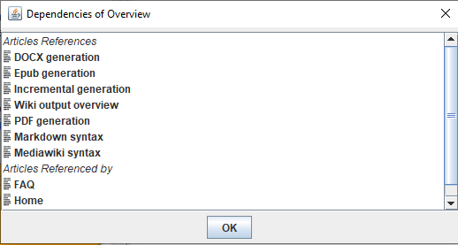
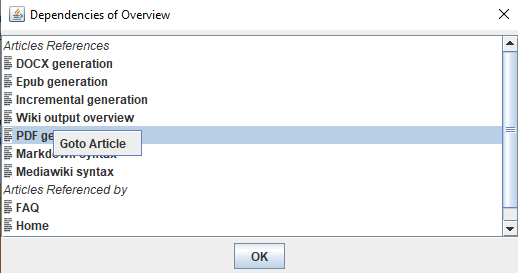

Home
Categories
Dictionary
Download
Project Details
Changes Log
What Links Here
How To
Syntax
FAQ
License
Editor tree dependencies
The dependencies window show the dependencies of the selected element in the tree. Right-clicking on the tree will show in the following menu:

Right-clicking on an element in the window allow to navigate to this element in the tree.
- The "Dependencies" option show a window showing the dependencies of the selected element
Content of the dependencies window
The window will present all the elements which have a reference on the selected element, and the elements wich are referenced by the element. For example, in the following example you will see the articles which have a reference on the selected article, and the articles which are referenced by the selected article:
Navigating in the window

Right-clicking on an element in the window allow to navigate to this element in the tree.
See also
- DocGenerator editor: This article explains the DocGenerator editor
- Editor tree: This article is about the left panel of the editor window, which shows the tree of the wiki
×

Categories: Editor | Gui